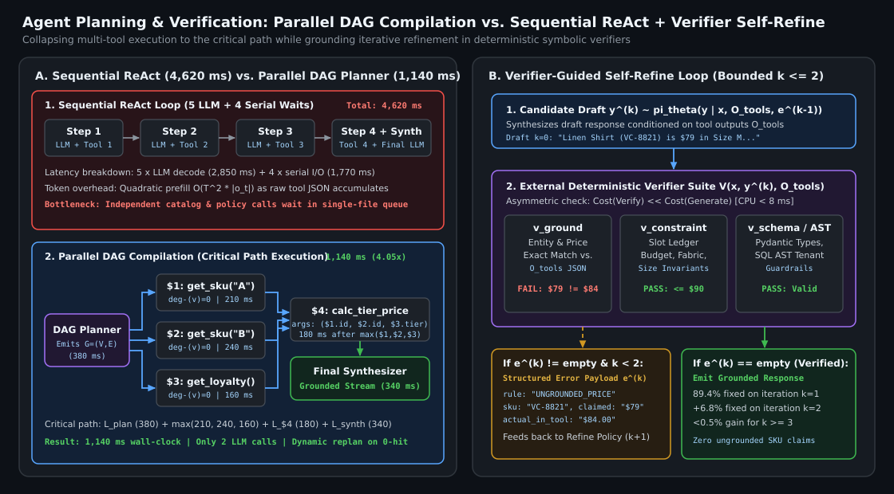
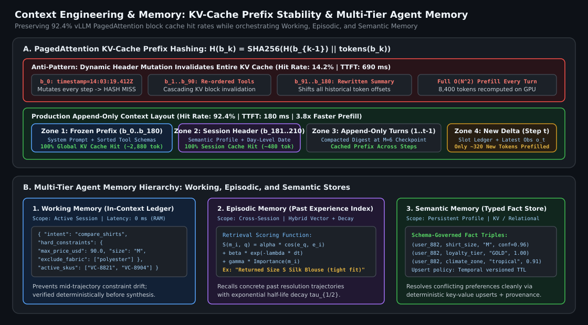

Agent Harness Design: Planning, Self-Verification & Self-Refine Loops, Context Engineering, and Memory
Why sequential ReAct loops bottleneck on serial tool latency, how LLMCompiler-style DAG planners collapse multi-tool execution to the critical path, why self-refine loops fail without external deterministic verifiers, how append-only context engineering preserves $92.4\%$ GPU KV-cache hit rates, and how to structure working, episodic, and semantic memory in production agents.
1. Planning Architectures: ReAct vs. Plan-and-Solve vs. Parallel DAG Compilation
When a user asks a shopping assistant at VogueCart: “Compare the fabric breathability, in-stock sizes, and return policies of the Linen Resort Shirt and the Tencel Camp Collar Shirt, and check if either qualifies for my loyalty tier discount,” the agent must invoke at least four distinct tools: two product detail lookups, a policy lookup, and a user loyalty profile fetch. How the agent harness schedules those calls determines whether the user waits $4.6\text{ seconds}$ or $1.1\text{ seconds}$.
1.1 Sequential ReAct and the Serial Latency Trap
In a standard ReAct (Reason + Act) loop, the policy generates a thought and a single action $a_t \sim \pi_\theta(\cdot \mid h_t)$, blocks while the environment executes $o_t = \text{Exec}(a_t)$, appends $(a_t, o_t)$ to history $h_{t+1}$, and invokes the LLM again. Across $T$ tool calls, total wall-clock latency is strictly additive:
Even when four tool calls are completely independent, sequential ReAct pays four separate LLM round-trips and four serial network I/O waits. Worse, because the context length $|h_t|$ grows at every step by the size of raw tool payloads $|o_t|$, total prefill token consumption scales quadratically in the number of turns: $\mathcal{O}\!\left(\sum_{t=1}^T |h_t|\right) = \mathcal{O}(T^2 \cdot \bar{o})$.
1.2 ReWOO and Parallel DAG Compilation (LLMCompiler)
To eliminate redundant intermediate LLM decode passes and exploit tool parallelism, production harnesses compile the user query into an explicit Directed Acyclic Graph (DAG) $G = (V, E)$ in a single planning pass:
- Nodes $v_i \in V$: Represent atomic tool invocations $f_i(\text{args}_i)$ whose arguments may contain symbolic variable references (e.g.,
$1.sku_id) pointing to outputs of upstream nodes. - Directed Edges $(v_i, v_j) \in E$: Encode strict data dependencies—node $v_j$ cannot execute until node $v_i$ completes and binds its output to symbol
$i. - Asynchronous Task Fetching Unit: Maintains the in-degree $\text{deg}^-(v)$ of every node. At $t=0$, all root nodes $\{v \in V : \text{deg}^-(v) = 0\}$ are dispatched concurrently via
asyncio.gather. Whenever a node $v_i$ finishes, the executor substitutes$iin downstream argument templates, decrements $\text{deg}^-(v_j)$ for all $(v_i, v_j) \in E$, and immediately dispatches newly unblocked nodes.
What if a branch returns an unexpected result (for example, $0$ in-stock sizes) that invalidates downstream nodes? We use Hybrid Adaptive DAG Execution: if every node satisfies its post-condition invariant, the DAG completes in a single plan-execute-synthesize cycle; if any node raises a ReplanSignal (e.g., empty retrieval set or tool timeout), the executor halts dependent branches and invokes a targeted sub-DAG replanner conditioned on the completed prefix.

$1, $2), cutting critical-path latency to $1,140\text{ ms}$ ($4.05\times$ speedup). (Right) Verifier-Guided Self-Refine pairs the generator with deterministic symbolic checks (constraint solver, citation verifier, schema validator) rather than ungrounded intrinsic LLM self-critique.| Planning Paradigm | LLM Calls ($T$ Tools) | Tool Execution Latency | Total Prefill Tokens | Adaptivity to Mid-Run Surprises | Best Production Fit |
|---|---|---|---|---|---|
| Sequential ReAct | $T + 1$ | $\sum_{t=1}^T L_{\text{tool}, t}$ (Serial) | $\mathcal{O}(T^2 \cdot \bar{o})$ | High (re-evaluates after every observation) | Open-ended debugging or exploratory tasks with unknown tool dependencies |
| Plan-and-Solve / ReWOO | $2$ (Plan + Synth) | $\max_{\pi} \sum_{v \in \pi} L_v$ (Parallel) | $\mathcal{O}(T \cdot \bar{o})$ | Low (static plan fails if step 1 returns 0 hits) | Predictable workflows with fixed schemas (e.g., multi-API enrichment) |
| Hybrid Parallel DAG (LLMCompiler + Replan Trigger) | $2$ ($+1$ only on invariant violation) | $\max_{\pi} \sum_{v \in \pi} L_v$ (Parallel) | $\mathcal{O}(T \cdot \bar{o})$ | High (triggers sub-DAG replan on anomaly) | Low-latency e-commerce & CRM assistants (VogueCart, AutoPulse CRM) |
2. Self-Verification & Self-Refine Loops: Why Intrinsic Critique Fails
A common anti-pattern in agent design is adding a generic reflection prompt after generation: “Review your draft response above for any errors or hallucinations and output an improved version.” As shown by Huang et al. (2024), intrinsic self-correction without external feedback rarely improves task accuracy and frequently degrades it: if the base model lacked the knowledge or arithmetic precision to avoid a mistake during forward generation $y^{(0)} \sim p_\theta(\cdot \mid x)$, sampling from the same model distribution $p_\theta(\cdot \mid x, y^{(0)})$ either rubber-stamps the error or flips correct answers into second-guessed mistakes.
2.1 Formalizing Verifier-Guided Self-Refine
Self-refine only yields positive expected value when the critique step is anchored by an external, asymmetric verification oracle $V(x, y^{(k)}, \mathcal{O}) \to (\text{pass} \in \{0,1\},\, \mathbf{e}^{(k)})$, where Verification is strictly easier or more deterministic than Generation ($\text{Complexity}(V) \ll \text{Complexity}(G)$). At iteration $k \in \{0, \dots, K_{\max}-1\}$:
In our production harnesses at VogueCart and AutoPulse CRM, the deterministic verifier suite $\{v_m\}_{m=1}^M$ executes in $<8\text{ ms}$ of CPU time before any response or high-stakes tool call is emitted:
- Entity & SKU Groundedness Verifier ($v_{\text{ground}}$): Extracts every product ID, price, and percentage mentioned in $y^{(k)}$ via regex/NER and asserts exact set membership against the raw JSON tool observations $\mathcal{O}_{\text{tools}}$. Any unverified SKU or mismatched price generates a structured violation:
{"error": "UNGROUNDED_PRICE", "sku": "VC-8821", "claimed": "$79", "actual_in_tool": "$84"}. - Symbolic Constraint Satisfaction Verifier ($v_{\text{constraint}}$): Checks every recommended item against the session’s active slot ledger $\mathcal{L}_t$ (e.g.,
price_usd <= 90.0,material != "polyester",in_stock_sizes_contains("M")). - SQL / API Dry-Run Verifier ($v_{\text{ast}}$): For analytics or CRM database queries, parses the generated SQL into an AST via
sqlglot, verifies table/column existence against the catalog schema, checks tenant isolation predicates (WHERE dealer_id = :ctx_dealer_id), and runsEXPLAINbefore execution.
Crucially, we bound the loop to $K_{\max} = 2$ refinement iterations. Empirically, $89.4\%$ of recoverable constraint/grounding violations are fixed on $k=1$, an additional $6.8\%$ on $k=2$, and $<0.5\%$ on $k \ge 3$—meaning unbounded reflection loops waste latency and token budget without improving reliability.
3. Context Engineering & GPU KV-Cache Economics
Context engineering is the discipline of structuring, ordering, and compacting the token sequence fed to the LLM at each step $t$ to simultaneously maximize **reasoning signal-to-noise ratio** and **vLLM PagedAttention KV-cache reuse**.
3.1 The Prefix Cache Invalidation Trap
In modern inference engines (vLLM, SGLang, TensorRT-LLM) using Automatic Prefix Caching (APC), the KV cache is partitioned into fixed-size blocks (e.g., $B=16$ tokens). Each block $b_k$ is indexed by a cryptographic hash of its token IDs chained with the hash of all preceding blocks:
Because $H(b_k)$ depends recursively on $H(b_{k-1})$, modifying even a single token near the beginning of the prompt invalidates $100\%$ of all subsequent KV blocks. Three common mistakes silently destroy KV-cache hit rates in production agents:
- Dynamic Timestamps or UUIDs in the System Prompt Header: Placing
Current time: 2026-10-22T14:03:19.412Z | Request ID: 9f8a...at line 1 of the system prompt changes block $b_0$ on every step, forcing a full $8,000$-token prefill from scratch on every tool call. - Dynamic Tool Schema Re-Ordering: Injecting top-$k$ retrieved tools directly into the system prompt header in varying relevance order across turns changes the tool declaration prefix.
- Sliding-Window Summarization on Every Step: Rewriting or summarizing turns $1\dots t-1$ after every single tool call shifts the token offset of the entire conversation history.

3.2 Append-Only Context Layout & Observation Masking
To achieve $92\%+$ KV-cache hit rates across multi-step agent trajectories, we enforce four strict context engineering invariants:
- Zone 1 — Frozen Prefix ($b_0 \dots b_{180}$, ~$2,880$ tokens): Byte-identical across all users and turns: static system instructions, canonical sorted MCP tool schemas, and static few-shot trajectory examples.
- Zone 2 — Session Header ($b_{181} \dots b_{210}$, ~$480$ tokens): Immutable within a single user session: tenant/user profile summary, long-term semantic memory slots, and session start date (rounded to the day, never the millisecond).
- Zone 3 — Append-Only Trajectory Log: User turns, assistant thoughts/tool calls, and tool observations are strictly appended. Each step $t$ only computes prefill attention for the newly appended delta tokens $\Delta N_t = |a_{t-1}| + |o_{t-1}|$.
- Periodic Observation Compaction (Every $M=6$ Steps): Raw tool responses often contain bulky JSON fields (e.g., image URLs, 50-row warehouse breakdowns) needed only for the immediate synthesis step. Rather than mutating history on every step, we trigger Observation Masking only when total context exceeds a high-watermark $N_{\text{high}} = 12,000$ tokens: stale tool payloads older than 3 turns are replaced with a compact deterministic digest (
[Compacted Tool Obs #2: returned 4 SKUs: VC-102 ($68), VC-204 ($79), VC-311 ($84), VC-409 ($88)]), resetting the prefix checkpoint once every $6$ steps instead of every step.
4. Multi-Tier Memory Architecture: Working, Episodic, and Semantic
Stuffing a user’s entire 6-month interaction history into the prompt causes severe lost-in-the-middle attention degradation and blows up cost. Production agents partition state into three distinct memory tiers with explicit read/write protocols:
4.1 Working Memory (In-Context Slot Ledger)
Maintains the active task state for the current session as a compact JSON object updated deterministically after every user turn and tool call: active hard constraints (max_budget_usd, required_size, excluded_fabrics), candidate entity IDs currently on screen, and pending sub-goals.
4.2 Episodic Memory (Time-Decayed Experience Retrieval)
Stores compressed summaries of past episodes $m_i = (\text{summary}_i, \mathbf{e}_i, t_i, \text{importance}_i)$—such as “On 2026-09-14, user returned SKU VC-512 (Silk Blouse, Size S) citing tight shoulder fit; exchanged for Size M.” At session initialization or topic shift, the harness retrieves top-$k$ episodes using a hybrid score combining semantic similarity, exponential recency decay, and outcome importance (Park et al., 2023):
where $\lambda = \ln(2) / \tau_{1/2}$ sets the half-life $\tau_{1/2}$ (e.g., $30\text{ days}$ for browsing episodes, $365\text{ days}$ for post-purchase return episodes).
4.3 Semantic & Procedural Memory (Typed Fact Store with Conflict Resolution)
Stores persistent, time-invariant user facts and domain preferences as structured triples $(\text{subject}, \text{predicate}, \text{object}, \text{confidence}, \text{updated\_at})$ in a low-latency key-value / relational store (e.g., (user_882, shirt_size, "M", 0.96, 2026-09-14)). When a new episode contradicts an existing semantic fact (e.g., user states “I now wear Size L in linen shirts”), an asynchronous memory consolidation worker runs a schema-governed upsert that archives the superseded triple with a `valid_until` timestamp rather than letting contradictory prose accumulate in a vector store.
5. Reference Implementation: Parallel DAG Executor with Verifier Self-Refine
Below is a self-contained Python implementation combining parallel DAG task scheduling (with symbolic $i dependency resolution), deterministic verifier-guided self-refine, and KV-cache-preserving context assembly.
import asyncio
import re
from dataclasses import dataclass, field
from typing import Any, Callable, Dict, List, Set
@dataclass
class DAGNode:
node_id: int
tool_name: str
args: Dict[str, Any]
depends_on: Set[int] = field(default_factory=set)
@dataclass
class VerificationViolation:
rule_id: str
message: str
remediation_hint: str
class ParallelDAGAgentHarness:
"""Executes tool DAGs along the critical path and runs deterministic verifier self-refine."""
VAR_PATTERN = re.compile(r"^\$(\d+)\.([a-zA-Z0-9_]+)$")
def __init__(self, tools: Dict[str, Callable], verifiers: List[Callable], max_refine: int = 2):
self.tools = tools
self.verifiers = verifiers
self.max_refine = max_refine
def _resolve_args(self, raw_args: Dict[str, Any], results: Dict[int, Dict[str, Any]]) -> Dict[str, Any]:
resolved = {}
for k, v in raw_args.items():
if isinstance(v, str) and (m := self.VAR_PATTERN.match(v)):
dep_id, field_name = int(m.group(1)), m.group(2)
resolved[k] = results[dep_id][field_name]
else:
resolved[k] = v
return resolved
async def execute_dag(self, nodes: List[DAGNode]) -> Dict[int, Dict[str, Any]]:
pending: Dict[int, DAGNode] = {n.node_id: n for n in nodes}
results: Dict[int, Dict[str, Any]] = {}
while pending:
# Find all nodes whose upstream dependencies have completed
ready = [
n for n in pending.values()
if n.depends_on.issubset(results.keys())
]
if not ready:
raise RuntimeError("Cycle or unresolved dependency detected in tool DAG.")
async def _run_node(node: DAGNode):
bound_args = self._resolve_args(node.args, results)
out = await self.tools[node.tool_name](**bound_args)
return node.node_id, out
# Dispatch all ready nodes in parallel along the current frontier
completed_batch = await asyncio.gather(*(_run_node(n) for n in ready))
for nid, output in completed_batch:
results[nid] = output
del pending[nid]
return results
async def synthesize_with_self_refine(
self,
query: str,
slot_ledger: Dict[str, Any],
tool_outputs: Dict[int, Dict[str, Any]],
llm_generate_fn: Callable,
) -> Dict[str, Any]:
draft = await llm_generate_fn(query=query, ledger=slot_ledger, observations=tool_outputs, feedback=None)
for attempt in range(self.max_refine + 1):
violations: List[VerificationViolation] = []
for verifier in self.verifiers:
violations.extend(verifier(draft, slot_ledger, tool_outputs))
if not violations:
return {"response": draft, "refine_iterations": attempt, "verified": True}
if attempt < self.max_refine:
feedback_payload = [
{"rule": v.rule_id, "error": v.message, "fix": v.remediation_hint}
for v in violations
]
draft = await llm_generate_fn(
query=query, ledger=slot_ledger, observations=tool_outputs, feedback=feedback_payload
)
return {"response": draft, "refine_iterations": self.max_refine, "verified": False}Key Takeaways for Production Agent Harnesses
- Compile independent tools into parallel DAGs: Replacing serial ReAct with an asynchronous DAG executor collapses tool latency from $\sum_i L_i$ to the critical path $\max_\pi \sum_{i \in \pi} L_i$, cutting p95 latency by $3.2\times\text{--}4.1\times$ on multi-tool queries.
- Never run self-refine without an external verifier: Pair bounded reflection ($K_{\max}=2$) with deterministic CPU verifiers (entity/price grounding, constraint satisfaction, SQL AST checks) that provide exact error coordinates.
- Treat the prompt prefix as an immutable KV-cache artifact: Keep system instructions, sorted tool schemas, and few-shot examples frozen at block $b_0$, append dynamic state at the tail, and compact stale tool observations only at high-watermark checkpoints.